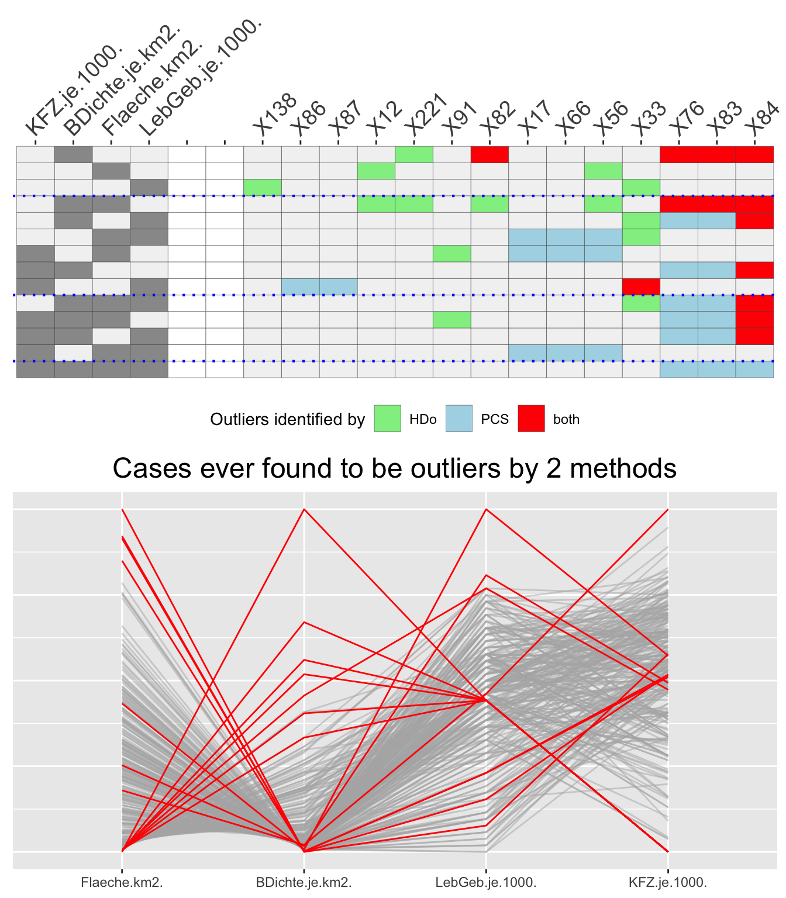

DrawingO3plots.RmdOutliers are a complicated business. It is difficult to define what they are and it is difficult to assess how they may affect analyses. They can be errors, missclassifications or fascinating special cases.
Univariate outliers are cases identified as outliers based on one variable. Multivariate outliers are cases identified based on several variables taken together. Datasets with many variables can give rise to a variety of different outliers depending on which combinations of variables (and which outlier identification methods) are used. An O3 plot shows which cases are identified as potential outliers for every combination of variables.
library(OutliersO3)
## Registered S3 method overwritten by 'GGally':
## method from
## +.gg ggplot2library(ggplot2) data(Election2005) data <- Election2005[, c(6, 10, 17, 28)] O3s <- O3prep(data, method="HDo", tols=0.05, boxplotLimits=6) O3s1 <- O3plotT(O3s, caseNames=Election2005$Name) O3s1$gO3 + theme(plot.margin = unit(c(0, 2, 0, 0), "cm"))
Fig 1: An O3 plot using the HDoutliers algorithm for a dataset comprising four structural variables for German parliamentary constituencies.
There is a row for each variable combination for which outliers were found and two blocks of columns. Each row of the block on the left shows which variable combination defines that row. As there are 4 variables, there are 4 columns, one for each variable, and a cell is coloured grey if that variable is part of the combination. The combinations (the rows) are sorted by numbers of outliers found within numbers of variables in the combination, and blue dotted lines separate the combinations with different numbers of variables. The columns in the left block are sorted by how often the variables occur. Combinations are only included if outliers are found with them. Two white columns separate this block from the block on the right that records the outliers found. There is one column for each case that is found to be an outlier at least once and these columns are sorted by the numbers of times the cases are outliers.
German words and names can be long and that is why the plot labels take up so much space. The full name of the constituency most often found to be an outlier is Berlin-Friedrichshain - Kreuzberg - Prenzlauer Berg Ost. Without a recognised abbreviation it can be better to use dataset row numbers, the default labelling, as is done in the other figures, and use that to find the name in the dataset.
Ten of the 299 cases are found to be outliers for some variable combination or other. Berlin-Friedrichshain - etc is identified by 7 combinations, always when population density is in the combination (except for the combination of all four variables, when no outliers are found). Only one outlying case, Düren, is not an outlier on any of the variables on their own.
Setting tol to 0.05 is not particularly stringent. The next figure compares outliers identified at different levels of the tolerance level.
O3x <- O3prep(data, method="HDo", tols=c(0.1, 0.05, 0.01), boxplotLimits=c(3, 6, 10)) O3x1 <- O3plotT(O3x) library(gridExtra) grid.arrange(O3x1$gO3, O3x1$gpcp, ncol=1)
Fig 2: An O3 plot for the same dataset drawn for different tol levels (above) and a parallel coordinate plot (below) with outliers highlighted in red that are identified by at least one variable combination for any level. The HDoutliers algorithm was used.
More cases are now identified as possible outliers and the variable car density finds many at a level of 0.1, but none at lower levels. These are not outliers at all but the Berlin constituencies, which all have the same low density of car ownership.
For every O3 plot there is a complementary parallel coordinate plot with outliers coloured red that are identified by any of the variable combinations.
Different outlier methods may identify different sets of outliers and the next figure compares methods HDoutliers and FastPCS, using the package’s default tolerance levels of 0.05 for HDoutliers and 0.01 for FastPCS. For any method like FastPCS that does not identify univariate outliers, boxplot limits are used for single variables defined by the argument boxplotLimits.
O3m <- O3prep(data, method=c("HDo", "PCS")) O3m1 <- O3plotM(O3m) grid.arrange(O3m1$gO3, O3m1$gpcp, ncol=1)

Fig 3: An O3 plot displaying outliers found by either or both of methods HDoutliers and FastPCS (above) and the complementary parallel coordinate plot.
FastPCS finds many more outliers than HDoutliers A few outliers found by HDoutliers are not identified as outliers by FastPCS for the same combinations of variables, but mostly for other combinations.
The OutliersO3 package offers the choice of 6 outlier identification methods and all 6 can be compared in one plot. If all 6 methods identify an outlying case for a particular variable combination, it is shown in red. If five methods agree, the cell is coloured orange and if X agree (X≤4) then slategrayX shading is used. The tolerance levels used for each method in this plot are the defaults ones set in the package.
It is useful to know how many outliers have been found before drawing the displays—there can be very many— and so a table of the O3plot output, nOut (number of outliers), is useful.
O3y <- O3prep(data, method=c("HDo", "PCS", "BAC", "adjOut", "DDC", "MCD")) O3y1 <- O3plotM(O3y) cx <- data.frame(outlier_method=names(O3y1$nOut), number_of_outliers=O3y1$nOut) knitr::kable(cx, row.names=FALSE)
| outlier_method | number_of_outliers |
|---|---|
| HDo | 10 |
| PCS | 10 |
| BAC | 5 |
| adjOut | 2 |
| DDC | 4 |
| MCD | 11 |
Drawing the plot and the complementary parallel coordinate plot gives:
grid.arrange(O3y1$gO3, O3y1$gpcp, ncol=1)
Fig 4: An O3 plot displaying outliers found by any of the 6 methods and the parallel coordinate plot with cases identified by any method for any variable combination highlighted in red.
(The large number of potential outliers identified makes a mess of the labelling, as it did to a lesser extent in the previous plot, even though only row numbers are used as labels.)
Although all methods identify at least some potential outliers, no case is identified by all or even five methods for the same combination of variables. covMcd, mvBACON, and FastPCS identify far too many cases, primarily for particular variable combinations. It is interesting to note that there is still one variable combination (car ownership on its own) for which no outliers are identified by any method at this tolerance level.
Using the same tolerance level for each method is not ideal, as they each use the parameter in a different way. The problem then becomes deciding how to set individual parameter values that are in some sense equivalent for the methods you want to compare. This is discussed in the second vignette, “Different outlier tolerance levels for different O3 plots”.